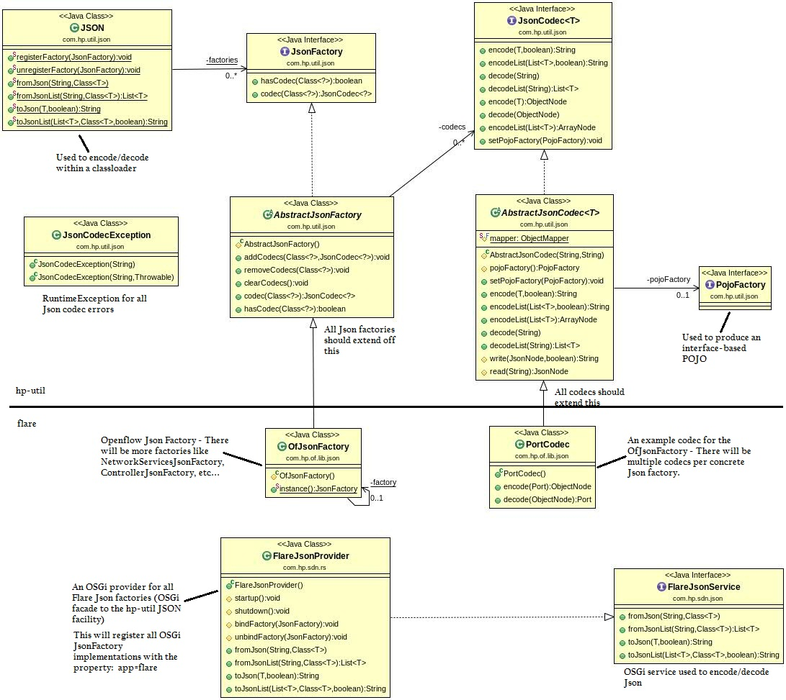

<!--
  ~ Copyright (c) 2014 Hewlett-Packard Development Company, L.P.
  ~
  ~ This program and the accompanying materials are made available under the
  ~ terms of the Eclipse Public License v1.0 which accompanies this distribution,
  ~ and is available at http://www.eclipse.org/legal/epl-v10.html
  -->

<html>
<body>

Collection of facilities to transform POJOs into JSON and vice versa.  
<p>
Here is the layout of the classes and their example usage within the HP Flare platform:

</body>
</html>
